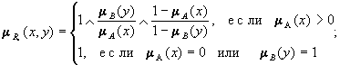
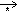

|
|
Fuzzy Technologies Lab. |
Нечеткими высказываниями будем называть высказывания следующего вида: 4. НЕЧЕТКИЕ ВЫСКАЗЫВАНИЯ И НЕЧЕТКИЕ МОДЕЛИ СИСТЕМ
Высказывания на множестве значений фиксированной лингвистической переменной
- Высказывание <b есть b'>, где b - наименование лингвистической переменной, b' - ее значение, которому соответствует нечеткое множество на универсальном множестве Х.
Например высказывание <давление большое> предполагает, что лингвистической переменной "давление" придается значение "большое", для которого на универсальном множестве Х переменной "давление" определено соответствующее данному значению "большое" нечеткое множество.- Высказывание <b есть mb'>, где m - модификатор, которому соответствуют слова "ОЧЕНЬ", "БОЛЕЕ ИЛИ МЕНЕЕ", "МНОГО БОЛЬШЕ" и др.
Например: <давление очень большое>, <скорость много больше средней> и др.
- Составные высказывания, образованные из высказываний видов 1. и 2. и союзов "И", "ИЛИ", "ЕСЛИ.., ТО...", "ЕСЛИ.., ТО.., ИНАЧЕ".
То, что значения фиксированной лингвистической переменной соответствуют нечетким множествам одного и того же универсального множества Х, позволяет отождествлять модификаторы "очень" или "не" с операциями "CON" и "дополнение", а союзы "И", "ИЛИ" с операциями "пересечение" и "объединение" над нечеткими множествами .
Для иллюстрации понятия лингвистической переменной мы в качестве примера рассматривали лингвистическую переменную "толщина изделия" с базовым терм-множеством Т = {"малая", "средняя", "большая"}. При этом на Х = [10, 80] мы определили нечеткие множества А1, А2, А3, соответствующие базовым значениям: "малая", "средняя", "большая".
В этом случае высказыванию <толщина изделия очень малая> соответствует нечеткое множество CONA = A2; высказыванию <толщина изделия не большая или средняя> - нечеткое множество А2È высказыванию <толщина изделия не малая и не большая> А1Ç.
Высказывания <толщина изделия много больше средней> или <толщина изделия близка к средней> требуют использования нечетких отношений R ("много больше,чем") и R ("близко к"), заданных на Х´Х. Тогда этим высказываниям будут соответствовать нечеткие множества A·R1 и A·R2, индуцированные нечеткими отношениями R1 и R2.
Случай двух и более лингвистических переменных
Пусть <a, Ta, X, Ga, Ma> и <b, Tb, Y, Gb, Mb> - лингвистические переменные, и высказываниям <a есть a'>, <b есть b '> соответствуют нечеткие множества А и В заданные на X и Y.
Составные нечеткие высказывания вида 3, связывающие значения лингвистических переменных a и b, можно привести к высказываниям вида 1, введя лингвистическую переменную (a, b), значениям которой будут соответствовать нечеткие множества на X´Y.
Напомним, что нечеткие множества А и В, заданные на X и Y, порождают на X´Y нечеткие множества и , называемые цилиндрическими продолжениями, с функциями принадлежности:
(x,y) = mA(x) при любом y,
(x,y) = mB(y) при любом x,
где (x,y) X´Y.
Нечеткие множества, соответствующие составным высказываниям
<a есть a' и b есть b'> и
<a есть a' или b есть b'>,
определяются по следующим правилам (преобразования к виду 1), справедливым при условии невзаимодействия переменных, т.е. множества X и Y таковы, что их элементы не связаны какой-либо функциональной зависимостью.
Правило преобразования конъюнктивной формы Правила преобразований нечетких высказываний
Справедливо выражение:
<a есть a' и b есть b'>Þ<(a, b) есть (a'Çb')>.
Здесь Þ - знак подстановки, a'Çb' - значение лингвистической переменной (a, b), соответствующее исходному высказыванию <a есть a' и b есть b'>, которому на X´Y ставится в соответствие нечеткое множество Ç c функцией принадлежности
(x,y) = (x,y)L(x,y) = mA(x)LmB(y). Правило преобразования дизъюнктивной формы
Справедливо выражение:
<a есть a' или b есть b'>Þ<(a,b) есть (a'Èb')>, где значению (a'Èb') лингвистической переменной (a, b) соответствует нечеткое множество È, с функцией принадлежности
(x,y) = (x,y)V(x,y) = mA(x)VmB(y). Замечание 1. Правила справедливы также для переменных вида <a, T1, X, G1,M1> и <a, T2, Y, G2, M2>, когда в форме значений лингвистических переменных формализованы невзаимодействующие характеристики одного и того же объекта. Например, для построения нечеткого множества высказывания <ночь теплая и очень темная> нужно использовать правило конъюнктивной формы, а для высказывания <ночь теплая или очень темная> - правило дизъюнктивной формы.
Замечание 2. Если задана совокупность лингвистических переменных {<ai, Ti, Xi, Gi, Mi>}, i = 1, 2, .., n, то любое составное высказывание, полученное из высказываний <a есть a'> с использованием модификаторов "очень", "не", "более или менее" и др. и связок "и", "или", можно привести к виду <a есть a'>, где a - составная лингвистическая переменная (a1,a2,..,an ), a' - ее значение, определяемое (как и функция принадлежности) в соответствии с вышеуказанными правилами.
Правило преобразования высказываний импликативной формы
Справедливо выражение:
<если a есть a', то b есть b'>Þ <(a, b) есть (a'®b')>, где значению (a'®b') лингвистической переменной (a, b) соответствует нечеткое отношение XRY на X´Y.
Функция принадлежности mR(x,y) зависит от выбранного способа задания нечеткой импликации.
Способы определения нечеткой импликации Будем считать, что заданы универсальные множества X и Y, содержащие конечное число элементов. Под способом определения нечеткой импликации "если А, то В" (где А и В нечеткие множества на X и Y соответственно) будем понимать способ задания нечеткого отношения R на X´Y, соответствующего данному высказыванию.
С целью обоснованного выбора определения нечеткой импликации, японскими математиками Мидзумото, Танака и Фуками было проведено исследование всех известных по литературе определений (плюс предложенные авторами). Рассмотренные определения задавали следующие нечеткие отношения для высказывания "если А, то В":
- Rm = (A´B)È(
´Y)
mRm(x,y) = (mA(x)L mB(y)) V (1 - mA(x));- Ra = (
mRa(x,y) = 1 L (1-mA(x) + mB(y));- Rc = A´B
mRc(x,y) = mA(x)L mB(y);- Rs = A´YX´B
mRs(x,y) = ;- Rg = A´YX´B
mRg(x,y) = ;- Rsg = ( A´Y
X´B ) Ç ( )
;- Rgg = ( A´YX´B) Ç ()
;- Rgs = ( A´YX´B) Ç ()
;- Rss = ( A´YX´B) Ç ()
;- Rb = (
mRb(x,y) = (1-mA(x)) Ú mB(y);- Rà = A´YX´B
;- R· = A´YX´B
- R* = A´YX´B
mR*(x,y) = 1 - mA(x)+ mA(x)× mB(y);- R# = A´YX´B
mR#(x,y)=( mA(x)Ù mB(y))Ú ((1 - mA(x)) Ù(1 - mB(y)) Ú(mB(y) Ù(1 - mA (x));- RÑ = A´YX´B
Правилом вывода являлось композиционное правило вывода с использованием (max-min)-композиции.
В качестве значений на входе системы рассматривались:
A' = A;
A' = "очень А"= А2 , mA0,5(x) = mA(x)2 ;
A' = "более или менее А" = А0,5 mA0,5(x)= mA(x)0,5;
A' = mA(x)0,5, (x) = 1 - mA (x).
Приведем таблицу итогов исследования. В ней символ "0" означает выполнение соответствующей схемы вход-выход, символ "x" - невыполнение. Следствие "неизвестно" (Н) соответствует утверждению: "если x=A, то нельзя получить никакой информации об y".
В данной таблице первая графа -"Посылка", вторая -"Следствие".
1 2 Rm Ra Rc Rs Rg Rsg Rgg Rgs Rss Rb Rà R· R* R# RÑ A B x x 0 0 0 0 0 0 0 x x x x x x A2 B2 x x x 0 x 0 x x 0 x x x x x x A2 B x x 0 x 0 x 0 0 x x x x x x x A0,5 B0,5 x x x 0 0 0 0 0 0 x x x x x x A0,5 B x x 0 x x x x x x x x x x x x Н 0 0 x 0 0 x x x x 0 0 0 0 x x A B x x x x x 0 0 0 0 x x x x x x Кроме ответа о выполнении соответствующей схемы (0 или х),авторами исследованы явные выражения для функций принадлежности следствий по каждому из вариантов определения нечеткой импликации, на основе чего ими был сформулирован вывод:
- Rm и Ra не могут быть использованы;
- Rc может использоваться частично; - Rs , Rg , Rsg , Rgg , Rgs , Rss рекомендованы к использованию;
- Rb , Rà, R·, R* , R# , RÑ не рекомендованы к использованию.
|
Нечеткие множества в системах управления | В.Я. Пивкин, Е.П. Бакулин, Д.И. Кореньков |